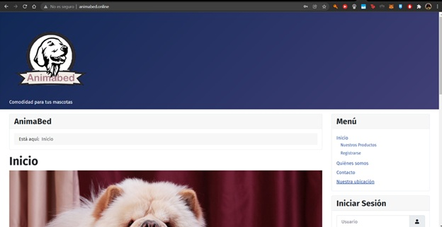
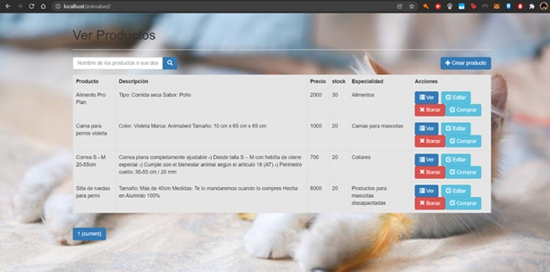
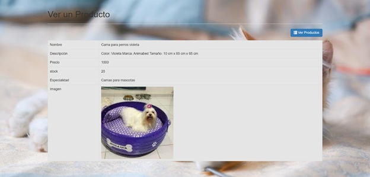
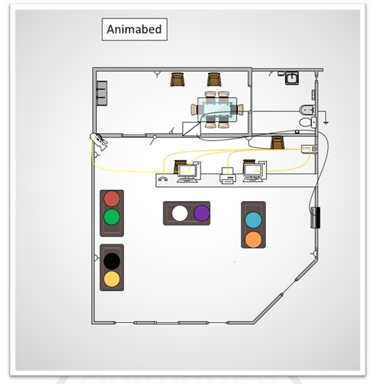
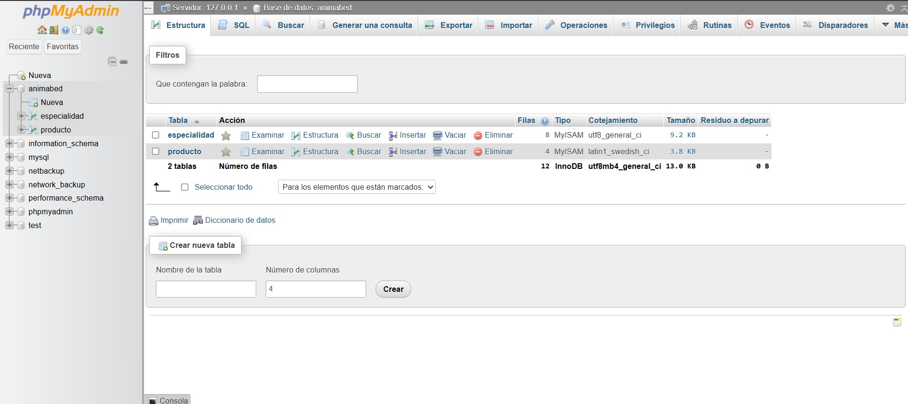
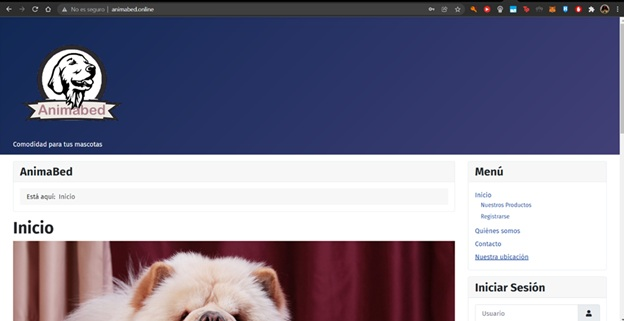
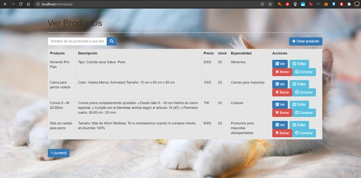
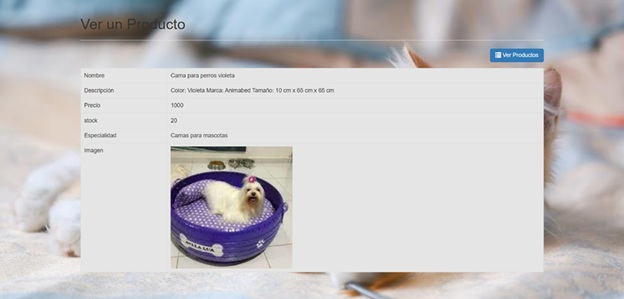
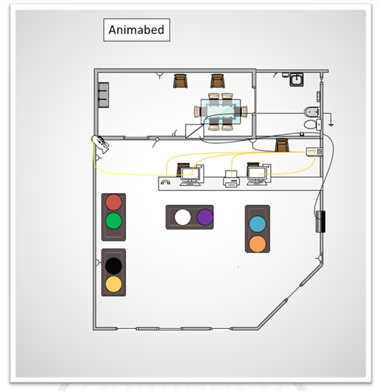
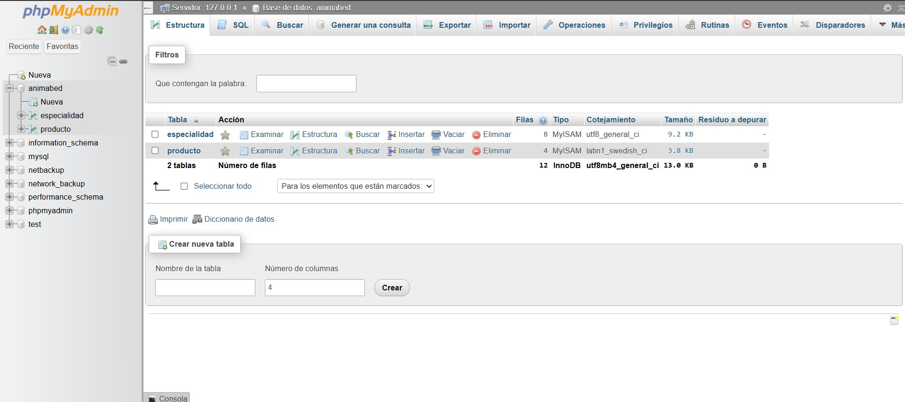

Descripción del proyecto
Animabed fue un proyecto académico que consistió en desarrollar un sistema web tipo e-commerce con funcionalidades CRUD (crear, leer, actualizar y eliminar registros). Su objetivo era ofrecer un catálogo de camas para mascotas fabricadas con materiales reciclados provenientes de neumáticos y caucho reutilizado.
El proyecto fue desarrollado en PHP con base de datos MySQL, utilizando HTML y CSS para la interfaz. Incluía panel de administración, gestión de productos, simulación de carrito de compras y registro de usuarios.
Animabed reflejaba la idea de un emprendimiento sustentable, combinando tecnología con conciencia ambiental.
Galería de imágenes
 








